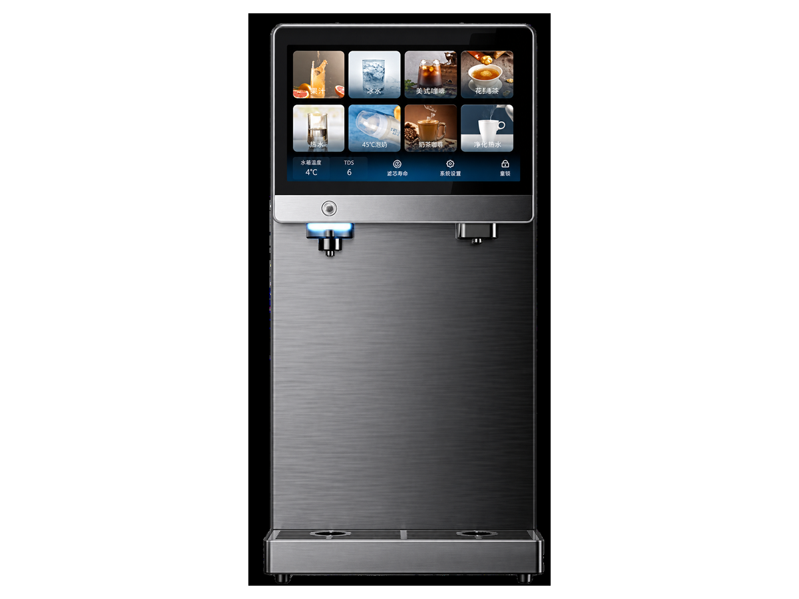

Auftischgeräte
AuftischgeräteRP-C07
RO-Reiniger mit Heizkanne
SKU: RP-C07
MOQ: Auf Anfrage zu bestätigen
Startseite/Produkte/Auftischsysteme/ RP-C14

Auftischsysteme
Sprudelwasser-Serie (W61) — acht Varianten. RP-C14 (W61) führt die Serie an.
RP-C14, RP-C05 und die W62-Ausführung sind drei der acht Varianten der Sprudelwasser-Serie. Die Serie umfasst außerdem die W64-Ausführung — dasselbe Modell wie RP-C14 (W61), nur die Panelausführung — und vier weitere Blasenvarianten (W65, W68, W69 und D1), deren Spezifikationen je Auftrag bestätigt werden.
Die drei abgebildeten Varianten teilen die untenstehenden Spezifikationswerte und unterscheiden sich nur in Display und Frontpanel: RP-C14 (W61) hat einen kleinen LED-Touchscreen und ein dunkelgrau gestreiftes Panel; RP-C05 (W60) hat einen 7-Zoll-Farb-Touchscreen und ein dunkel gebürstetes Metallpanel; RP-C14 (W62) ist dasselbe Modell wie RP-C14 (W61) mit einem schwarz-goldenen Vertikalstreifen-Panel.
Spezifikationen werden pro Modell und Auftrag bestätigt.
Die unten bestätigten Spezifikationen gelten für RP-C14, RP-C05, die W62-Variante und die W64-Oberfläche.
Acht Varianten — auch anbieten alsRP-C05 (Sprudel, Touchscreen).
Spannung / Frequenz ist je nach Zielland konfigurierbar. Andere Konfigurationen werden pro Auftrag bestätigt.
RP-C14 ist eine Auftisch-Sprudelwasser-Serie, die RO-Reinigung mit kohlensäurehaltigem Wasser in einem Gerät kombiniert. Die vier abgebildeten Varianten teilen dieselben Kernspezifikationen und unterscheiden sich nur in Display und Frontpanel, sodass eine Marke den Look wählen kann, der zu ihrer Linie passt, ohne die Maschine darunter zu ändern. Die abgebildeten Varianten teilen einen Reinwasser-Durchfluss von 520 mL/min und ein Nenn-Reinwasservolumen von 4000 L, und die Serie liefert außerdem 4 °C Eiswasser und Heißwasser. Mit acht Varianten in der Serie gibt sie Markeninhabern eine komplette Sprudelwasser-Range von einer Plattform.
Wie hoch ist die Mindestbestellmenge?
Die erste Bestellung beträgt 200 Stück pro Modell, Nachbestellungen 500 Stück.
Kann ich vor einer Großbestellung ein Muster bestellen?
Ja. Muster sind in 15 Tagen fertig, und die Mustergebühr wird bei Ihrer ersten Großbestellung erstattet. Großbestellungen dauern 40 Tage nach Musterfreigabe und werden FOB Shenzhen versandt.
Unterscheiden sich die Varianten in der Leistung?
Nein. Die vier abgebildeten Varianten teilen dieselben Spezifikationswerte und unterscheiden sich nur in Display und Frontblende; die anderen vier Blasenvarianten werden pro Auftrag bestätigt.
Bewegen Sie die Maus über ein Variantenbild, um die Spezifikationen zu sehen. Auf Touchscreens tippen Sie auf ein Bild.


Vollständige Spezifikationen für jede Variante, nebeneinander. Die Spezifikationstabelle weiter unten zeigt dieselben Werte.
| Spezifikation | RP-C14-1 — Sprudelwasser (W61) | RP-C14-2 — Sprudelwasser (W60) | RP-C14-3 — Sprudelwasser, schwarz-goldene Ausführung (W62) | RP-C14-4 — Sprudelwasser (W64) | RP-C14-5 — Sprudelwasser (W65) | RP-C14-6 — Sprudelwasser (W68) | RP-C14-7 — Sprudelwasser (W69) | RP-C14-8 — Sprudelwasser (D1) |
|---|---|---|---|---|---|---|---|---|
| Display | Kleiner LED-Touchscreen | 7-Zoll-Farb-Touchscreen | Kleiner LED-Touchscreen | Kleiner LED-Touchscreen | Je Auftrag bestätigt | Je Auftrag bestätigt | Je Auftrag bestätigt | Je Auftrag bestätigt |
| Frontblende | Dunkelgraues gestreiftes Paneel | Dunkles Paneel aus gebürstetem Metall | Schwarz-goldenes Paneel mit vertikalen Streifen | Paneeloberfläche je Auftrag zu bestätigen | Je Auftrag bestätigt | Je Auftrag bestätigt | Je Auftrag bestätigt | Je Auftrag bestätigt |
| Gereinigter Wasserdurchfluss | 520 mL/min | 520 mL/min | 520 mL/min | 520 mL/min | Je Auftrag bestätigt | Je Auftrag bestätigt | Je Auftrag bestätigt | Je Auftrag bestätigt |
| Nenn-Reinwasservolumen | 4000 L | 4000 L | 4000 L | 4000 L | Je Auftrag bestätigt | Je Auftrag bestätigt | Je Auftrag bestätigt | Je Auftrag bestätigt |
| Filtration | PAC + RO + CF | PAC + RO + CF | PAC + RO + CF | PAC + RO + CF | RO (Serienmerkmal) | RO (Serienmerkmal) | RO (Serienmerkmal) | RO (Serienmerkmal) |
| Kühlung | Kompressor; 3.0 L/h | Kompressor; 3.0 L/h | Kompressor; 3.0 L/h | Kompressor; 3.0 L/h | Kompressor; 4 °C Eiswasser (Serienmerkmale) | Kompressor; 4 °C Eiswasser (Serienmerkmale) | Kompressor; 4 °C Eiswasser (Serienmerkmale) | Kompressor; 4 °C Eiswasser (Serienmerkmale) |
| Heizleistung | 18 L/h | 18 L/h | 18 L/h | 18 L/h | Durchlauferhitzung in 3 Sekunden (Serienmerkmal) | Durchlauferhitzung in 3 Sekunden (Serienmerkmal) | Durchlauferhitzung in 3 Sekunden (Serienmerkmal) | Durchlauferhitzung in 3 Sekunden (Serienmerkmal) |
| Heizleistung | 2270 W | 2270 W | 2270 W | 2270 W | Je Auftrag bestätigt | Je Auftrag bestätigt | Je Auftrag bestätigt | Je Auftrag bestätigt |
| Nanoblasenwasser | 800 mL | 800 mL | 800 mL | 800 mL | SUPERMIX Gas-Flüssigkeits-Mischung (Serienmerkmal) | SUPERMIX Gas-Flüssigkeits-Mischung (Serienmerkmal) | SUPERMIX Gas-Flüssigkeits-Mischung (Serienmerkmal) | SUPERMIX Gas-Flüssigkeits-Mischung (Serienmerkmal) |
| Abmessungen | 467 × 220 × 430 mm | 467 × 220 × 430 mm | 467 × 220 × 430 mm | 467 × 220 × 430 mm | Je Auftrag bestätigt | Je Auftrag bestätigt | Je Auftrag bestätigt | Je Auftrag bestätigt |
| Spannung / Frequenz | An das Zielland anpassbar | An das Zielland anpassbar | An das Zielland anpassbar | An das Zielland anpassbar | An das Zielland anpassbar | An das Zielland anpassbar | An das Zielland anpassbar | An das Zielland anpassbar |
Die W62-Oberfläche ist eine Farboption von RP-C14 — dasselbe Modell und dieselben Spezifikationen wie RP-C14 (W61), nur die Blendenoberfläche.
Die W64-Oberfläche ist dasselbe Modell wie RP-C14 (W61), nur die Blendenoberfläche, und teilt die obenstehenden RP-C14 (W61)-Spezifikationswerte. Die Blasenvarianten W65, W68, W69 und D1 teilen die in der Serienübersicht gezeigten Serienmerkmale (SUPERMIX Gas-Flüssigkeits-Mischung, RO-Filtration, Kompressorkühlung mit 4 °C Eiswasser, UVC-Sterilisation, 3-Sekunden-Sofortheizung und großer Wassertank); alle anderen Werte für diese vier Varianten werden pro Auftrag bestätigt. Für W65, W68, W69, D1 oder W64 ist noch kein Produktfoto veröffentlicht — die Serienübersicht zeigt das Sortiment ohne Kennzeichnung einzelner Modelle.
W61-Produktvideo.
W60-Produktvideo.
9 Spezifikationszeilen aus dem ROPureOEM-Katalog — diese Werte gelten für RP-C14, RP-C05, die W62-Variante und die W64-Oberfläche.
| Gereinigter Wasserdurchfluss | 520 mL/min |
|---|---|
| Nenn-Reinwasservolumen | 4000 L |
| Filtration | PAC + RO + CF |
| Kühlung | Kompressor; 3.0 L/h |
| Heizleistung | 18 L/h |
| Heizleistung | 2270 W |
| Nanoblasenwasser | 800 mL |
| Abmessungen | 467 × 220 × 430 mm |
| Spannung / Frequenz | An das Zielland anpassbar |
Die Spezifikationen stammen aus dem ROPureOEM-Katalog. Wenn ein Wert noch nicht bestätigt ist, wird er als „Je Auftrag bestätigt“ gelistet — wir veröffentlichen keine unbestätigten Zahlen.
AuftischgeräteRO-Reiniger mit Heizkanne
SKU: RP-C07
MOQ: Auf Anfrage zu bestätigen
 Auftischgeräte
AuftischgeräteAll-in-one-Kartuschen-Auftischreiniger
SKU: RP-C08
MOQ: Auf Anfrage zu bestätigen
 Auftischgeräte
AuftischgeräteRO-Reiniger mit Eis, heißem und kaltem Wasser
SKU: RP-C09
MOQ: Auf Anfrage zu bestätigen
 Auftischgeräte
AuftischgeräteAuftisch-RO mit Kompressorkühlung
SKU: RP-C10
MOQ: Auf Anfrage zu bestätigen